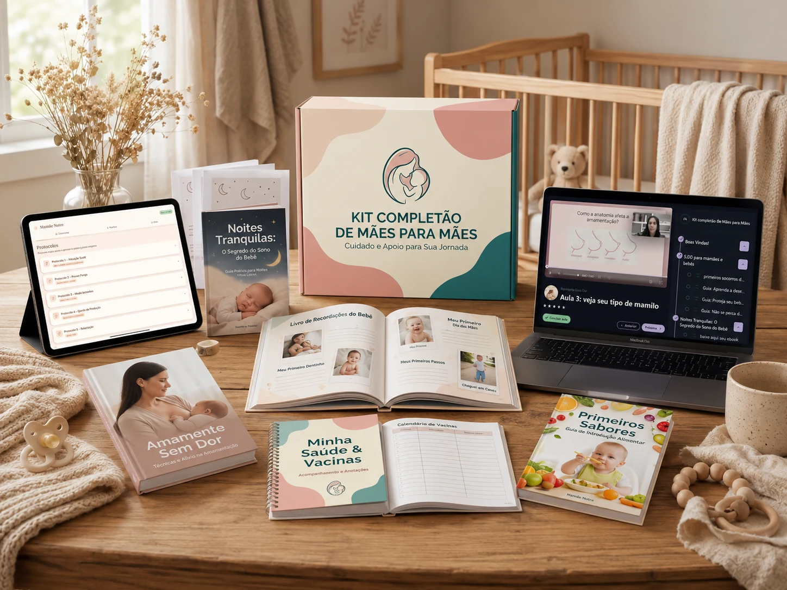
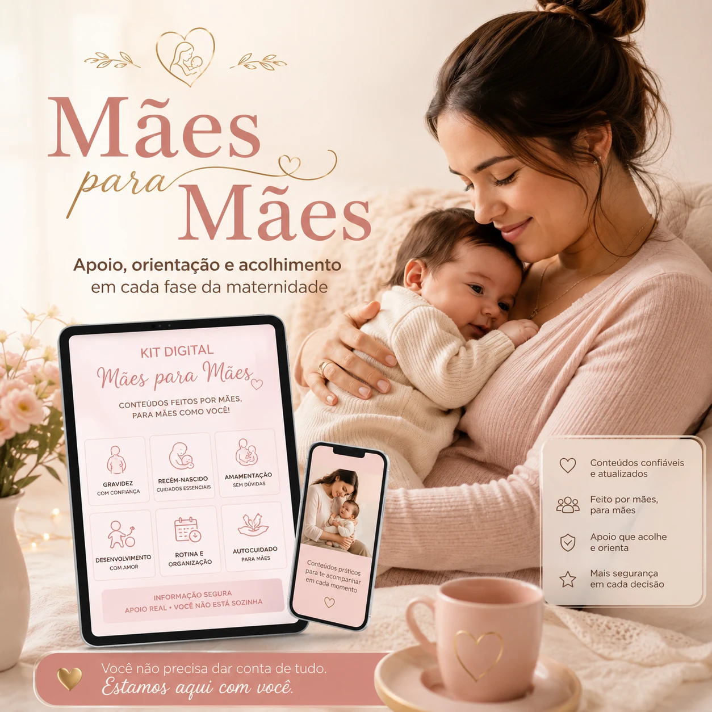

🌙
Mais clareza no sono do bebê
Entenda sinais de sono, fases do desenvolvimento e formas de organizar uma rotina mais tranquila.
Para mães cansadas, inseguras e cheias de dúvidas
Se seu bebê não dorme, a amamentação dói, você sente medo de não ter leite suficiente e cada choro te deixa insegura, você não precisa continuar tentando descobrir tudo sozinha.
O kit é para você que
Seu bebê acorda várias vezes durante a noite e você já não sabe mais o que tentar.
Você sente dor para amamentar ou tem medo de estar fazendo a pega errada.
Você se preocupa com a produção de leite e quer uma rotina mais organizada de estímulo à lactação.
Você tem medo de situações como engasgo, febre, queda ou emergência com o bebê.
Você recebe muitos palpites, pesquisa em vários lugares e fica ainda mais confusa.
O Kit Completão de Mães para Mães foi criado para reunir, em um único lugar, materiais práticos que ajudam você a se sentir mais preparada nos momentos em que a dúvida aperta.
Quero parar de me sentir perdidaAo acessar o Kit
Entenda sinais de sono, fases do desenvolvimento e formas de organizar uma rotina mais tranquila.
Aprenda orientações sobre pega, posição e cuidados para tornar esse momento mais confortável.
Tenha protocolos, receitas e chás de apoio à lactação dentro do LactaLux™.
Conteúdo educativo para te ajudar a agir com mais calma diante de imprevistos.
Orientações para iniciar essa nova fase com mais organização e menos medo.
Materiais para registrar informações importantes da saúde e desenvolvimento do bebê.
Você terá


O que você recebe hoje
E-book para entender o sono do bebê, sinais de sono e rotina familiar mais tranquila.
Treinamento em videoaulas com orientações sobre pega, posição e cuidados na amamentação.
E-book com informações educativas sobre primeiros socorros e primeiros cuidados com o bebê.
Plataforma com protocolos, receitas e chás de apoio à lactação para ajudar a mãe a estimular a produção de leite com mais organização.
Guia para conduzir a introdução alimentar com mais clareza, calma e segurança.
Material editável para organizar vacinas, consultas e registros de saúde do bebê.
Livro para registrar fotos, marcos importantes e memórias que passam rápido demais.
Feito para mães reais
Relatos reais
Relatos reais enviados por clientes. Os nomes foram preservados para manter a privacidade.


Oferta especial
Em vez de continuar buscando respostas soltas, tenha acesso a um conjunto de materiais para consultar sempre que a dúvida, o medo ou o cansaço aparecer.
De R$197,90
Pagamento único • Compra segura
Quero acessar agoraGarantia total
O risco é reduzido: você compra, acessa o conteúdo e decide se o material faz sentido para sua rotina.
Dúvidas
É digital. Você acessa pelo celular, computador ou tablet após a confirmação da compra.
Sim. O kit foi pensado para mães de recém-nascidos, bebês em fase de amamentação e famílias que vivem os primeiros anos do bebê.
Não. Ele reúne protocolos, receitas, chás e orientações educativas de apoio à lactação, mas a resposta pode variar de mãe para mãe.
Não. O material é educativo e não substitui avaliação médica, pediátrica, nutricional ou consultoria individual de amamentação.
Sim. Você tem 7 dias de garantia conforme as regras da plataforma de pagamento.
Tenha apoio, direção e materiais práticos para consultar quando a maternidade pesar.
Acessar o Kit Completão agora